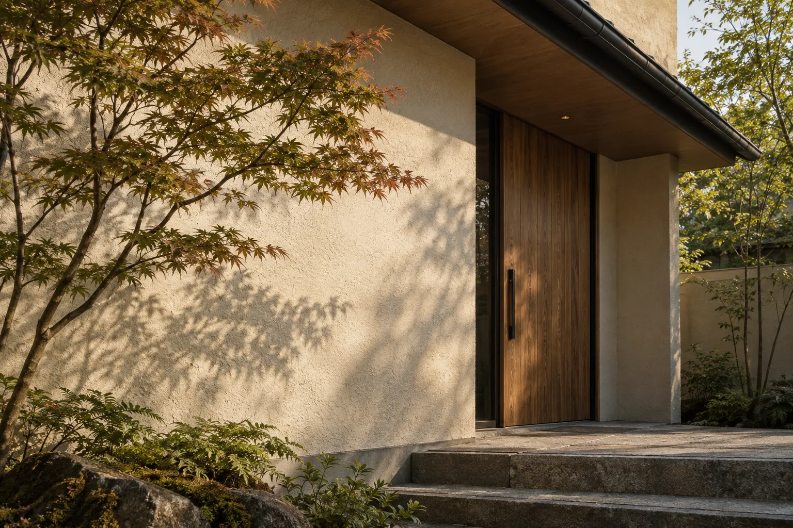

外壁
色あせ、汚れ、ひび、はがれ。気になる場所と、気づいた時期を伝えましょう。
堺市中区で、外壁塗装を考える。
色だけでは見えない工程にも、
目を向けるところから。

AI生成の作業イメージ・実際の施工風景ではありません。
一般的な塗装工程の紹介です。
素材や状態によって、適切な手順は異なります。
各項目を開いてご覧ください。
ひび、塗膜のはがれ、目地の状態などを確認。何を調べ、どのように結果を伝えるかを相談します。
汚れの除去や補修など、塗る前の準備について確認します。必要な処置は建物の素材と状態によって変わります。
使用する材料と塗装の工程を見積書で確認します。重ね塗りや乾燥は、材料ごとの仕様に沿った説明を受けましょう。
工事範囲と仕上がりを確認し、施工記録や保証・今後の相談先を受け取ります。保証の内容は契約前にも確認しましょう。

窓まわり、目地、軒先。
外観は、細部の積み重ねでできています。
どこまで施工するか、どこを補修するか。
範囲をはっきりさせることが、納得への一歩です。
以下は相談テーマの例です。
実際の対応範囲は個別にご確認ください。
色あせ、汚れ、ひび、はがれ。気になる場所と、気づいた時期を伝えましょう。
地上からわかる範囲の様子を伝え、調査方法や塗装できる素材かどうかを確認します。
すき間や傷みが気になる場所を整理。補修の方法と範囲を相談します。
外壁と一緒に手入れしたい場所を伝え、見積もりに含まれるか確認します。
わからないことは、決める前にひとつずつ。相談時に確認したいポイントをまとめました。
施工範囲、下地処理、塗料、足場、諸経費、税込・税別など、同じ条件で比較しましょう。追加費用の条件や保証の範囲も確認すると安心です。
会社や調査内容によって異なります。依頼前に費用の有無とキャンセル条件をご確認ください。このサンプルでは無料対応をお約束していません。
面積や光の当たり方で印象が変わります。大きめの色見本を屋外で確認し、屋根・窓枠・周囲の景観との組合せも相談しましょう。
対応する工事や施工できる素材は会社によって異なります。建物の状態と希望する工事を伝え、対応可否を個別にご確認ください。
気になる場所、希望の時期、色のイメージ。
まだ具体的でなくても、相談内容を整理するところから。